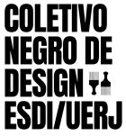

Como citar esse projeto
LOPES, L.; SANTOS, J.; ALVES, I.; COUTINHO, B.; GUILLEN, R.; OLIVEIRA, M. E.; CASTRO, B. Blackvis: Acervo de designers negros. Rio de Janeiro, 2026. Base de dados on-line.
Disponível em:
https://www.blackvis.esdi.uerj.br
Criado pelo Coletivo Negro de Design da ESDI/UERJ em parceria com MediaLAB UERJ.
Blackvis é um acervo de designers negros criado pelo Coletivo Negro de Design da ESDI/UERJ. A plataforma apresenta perfis de designers negros com objetivo de proporcionar maior representatividade e valorizar a cultura afro-brasileira na historiografia e no ensino de design no Brasil.
Nesta visualização, encontramos todos os designers de nosso acervo organizados em uma rede que os conecta por eixo de atuação e técnicas de design. É possível filtrá-la por eixo, nacionalidade e ano de nascimento.
ACESSE A VISUALIZAÇÃOVISUALIZAÇÃO DE DADOS COMO FERRAMENTA DE PESQUISA
é uma iniciativa do Coletivo Negro de Design da Escola Superior de Desenho Industrial da Universidade do Estado do Rio de Janeiro (ESDI/UERJ) em parceria com o projeto de extensão MediaLAB UERJ.
Nosso objetivo é contribuir para maior representatividade de designers negros e da cultura afro-brasileira na historiografia e no ensino de design no Brasil. Blackvis é um projeto de humanidades digitais que apresenta seu banco de dados em visualizações interativas. Buscamos reunir informações dispersas na internet com intuito de facilitar a pesquisa, consulta e análise dos perfis de designers negros em diversas frentes de atuação. Nossa intenção é que professores, pesquisadores, estudantes e profissionais de design consultem a plataforma ao buscar referências de designers negros.

O projeto Blackvis se inicia dentro da universidade como iniciativa de estudantes do Coletivo Negro de Design da ESDI e é formalizado como projeto de extensão e pesquisa sob coordenação dos discentes Larissa Lopes e Jésus Baro e da professora Barbara Castro.
Pela sua natureza colaborativa e de conhecimento aberto, compartilhamos neste documento aspectos metodológicos de como a base foi criada, considerando que é um processo contínuo e os critérios estão sujeitos a mudanças de acordo com o amadurecimento da pesquisa.
LOPES, L.; SANTOS, J.; ALVES, I.; COUTINHO, B.; GUILLEN, R.; OLIVEIRA, M. E.; CASTRO, B. Blackvis: Acervo de designers negros. Rio de Janeiro, 2026. Base de dados on-line.
Disponível em:
https://www.blackvis.esdi.uerj.br
LOPES, L.; SANTOS, J.; CASTRO, B. Blackvis: Metodologia do acervo. Rio de Janeiro, 2026.
Disponível em:
https://www.blackvis.esdi.uerj.br
O projeto Blackvis é uma iniciativa com foco no ensino do design no Brasil. No entanto, para realização de uma verdadeira educação antirracista é preciso conhecer e estudar a teoria de questões étnico-raciais no Brasil.
Com intuito de facilitar a introdução ao campo de conhecimento reunimos algumas referências bibliográficas e conteúdos interessantes para professores e estudantes no início dessa jornada. Além disso, reunimos produções bibliográficas de autores negros sobre design.
Acesse nossa planilha:
Referências bibliográficas